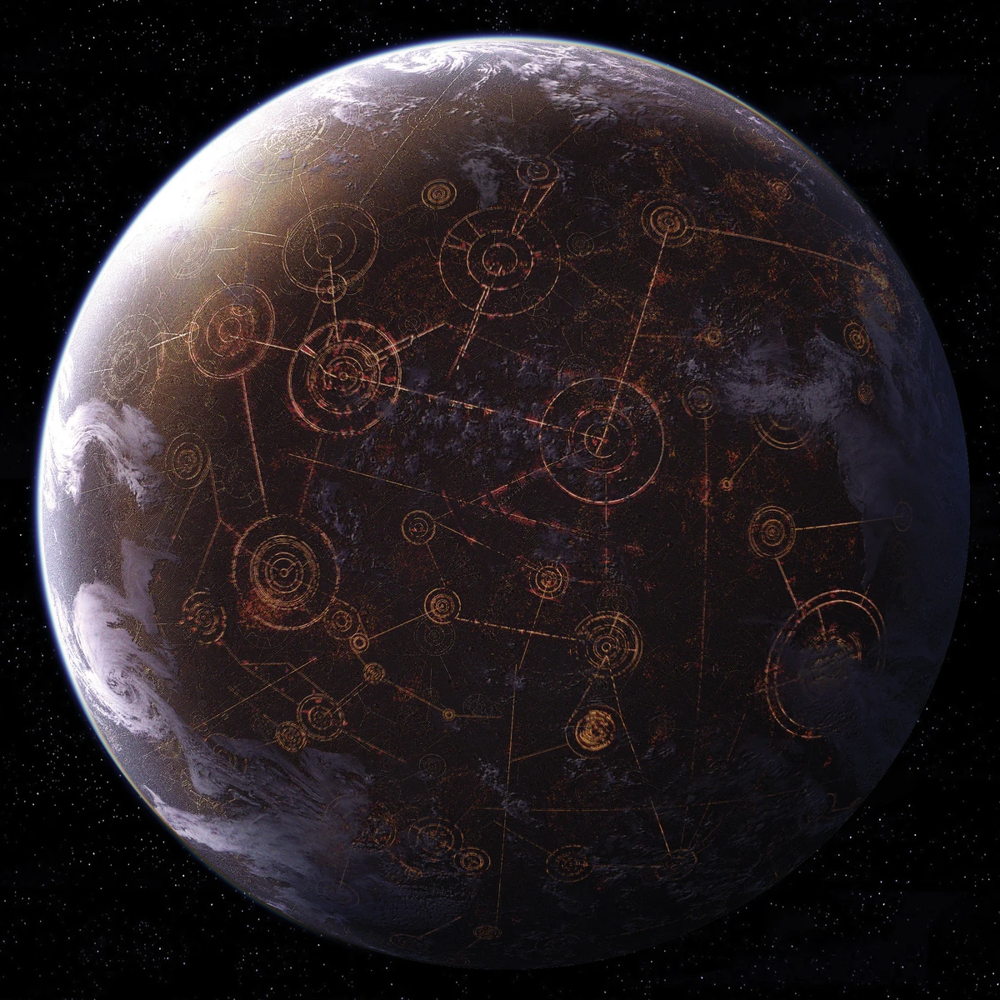
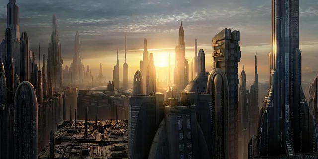

Desafio das Imagens
Coruscant


Coruscant a capital da Galáxia
Anakin Skywalker, The Chosen One
Se você estiver no celular, irá visualizar Anakin Skywalker
Se você estiver no desktop, irá visualizar Darth Vader

Construído por Othon Almeida® (aka 🐺Apollo ®)